Poisson seqence and wave functions
Dongyue Xie
May 16, 2018
Last updated: 2018-05-20
workflowr checks: (Click a bullet for more information)-
✖ R Markdown file: uncommitted changes
The R Markdown is untracked by Git. To know which version of the R Markdown file created these results, you’ll want to first commit it to the Git repo. If you’re still working on the analysis, you can ignore this warning. When you’re finished, you can runwflow_publishto commit the R Markdown file and build the HTML. -
✔ Environment: empty
Great job! The global environment was empty. Objects defined in the global environment can affect the analysis in your R Markdown file in unknown ways. For reproduciblity it’s best to always run the code in an empty environment.
-
✔ Seed:
set.seed(20180501)The command
set.seed(20180501)was run prior to running the code in the R Markdown file. Setting a seed ensures that any results that rely on randomness, e.g. subsampling or permutations, are reproducible. -
✔ Session information: recorded
Great job! Recording the operating system, R version, and package versions is critical for reproducibility.
-
Great! You are using Git for version control. Tracking code development and connecting the code version to the results is critical for reproducibility. The version displayed above was the version of the Git repository at the time these results were generated.✔ Repository version: db15e75
Note that you need to be careful to ensure that all relevant files for the analysis have been committed to Git prior to generating the results (you can usewflow_publishorwflow_git_commit). workflowr only checks the R Markdown file, but you know if there are other scripts or data files that it depends on. Below is the status of the Git repository when the results were generated:
Note that any generated files, e.g. HTML, png, CSS, etc., are not included in this status report because it is ok for generated content to have uncommitted changes.Ignored files: Ignored: .Rhistory Ignored: .Rproj.user/ Ignored: analysis/figure/ Ignored: log/ Untracked files: Untracked: analysis/binom.Rmd Untracked: analysis/overdis.Rmd Untracked: analysis/poiwave.Rmd Untracked: analysis/smashtutorial.Rmd Untracked: data/treas_bill.csv Untracked: docs/figure/poiwave.Rmd/ Untracked: docs/figure/smashtutorial.Rmd/ Unstaged changes: Modified: analysis/ashpmean.Rmd Modified: analysis/nugget.Rmd
We have shown that smashgen-Poisson outperforms smash when smoothing Poisson data with nugget effect. One natural question is: is this true for Poisson data(no nugget effect)?
One limitation of smash.pois is that it can only use an analogue of the Haar wavelet transform to the Poisson data. So it may lose power when dealing with wavelet whose signal is better captured by more complex basis functions.
In this analysis, we try to address the above two questions.
We have seen in the previous analysis that Symmlet 8 gives better decomposition for smoother functions, while for functions with spike or sharp changes, the two basis have similar results.
simu_study_basis=function(mu,nsimu=30,seed=1234,niter=1){
n=length(mu)
set.seed(seed)
smash.err=c()
gen.haar.err=c()
gen.sym.err=c()
for(iter in 1:nsimu){
y=rpois(n,mu)
smash.out=smash.poiss(y)
gen.haar.out=smash_gen(y,niter = niter)
gen.sym.out=smash_gen(y,wave_family = 'DaubLeAsymm',filter.number = 8,niter=niter)
smash.err[iter]=mse(smash.out,mu)
gen.haar.err[iter]=mse(gen.haar.out,mu)
gen.sym.err[iter]=mse(gen.sym.out,mu)
}
return(list(est=data.frame(smash=smash.out,smashgen.haar=gen.haar.out,smashgen.sym=gen.sym.out),err=data.frame(smash=smash.err,smashgen.haar=gen.haar.err,smashgen.sym=gen.sym.err)))
}HeaviSine
range of \(\mu\) roughly \((1/20,40)\).
#library(wavethresh)
library(smashrgen)
mu=DJ.EX(256,signal = 2)$heavi
mu=exp(mu+1)
plot(mu,type='l')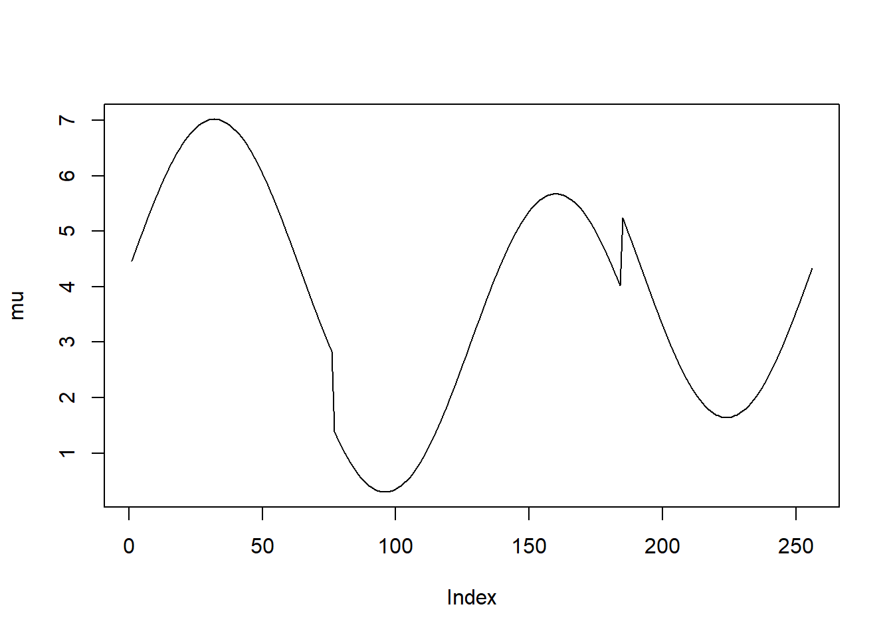
result=simu_study_basis(mu)
boxplot(result$err)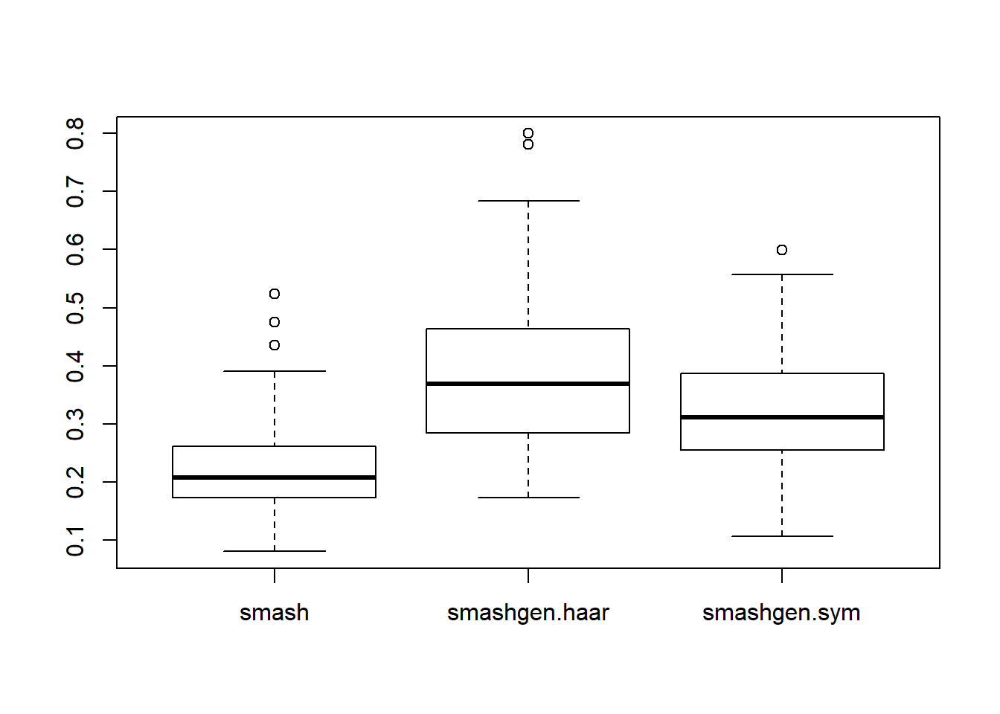
Doppler
mu=DJ.EX(256)$doppler
mu=mu-min(mu)+0.1
plot(mu,type='l')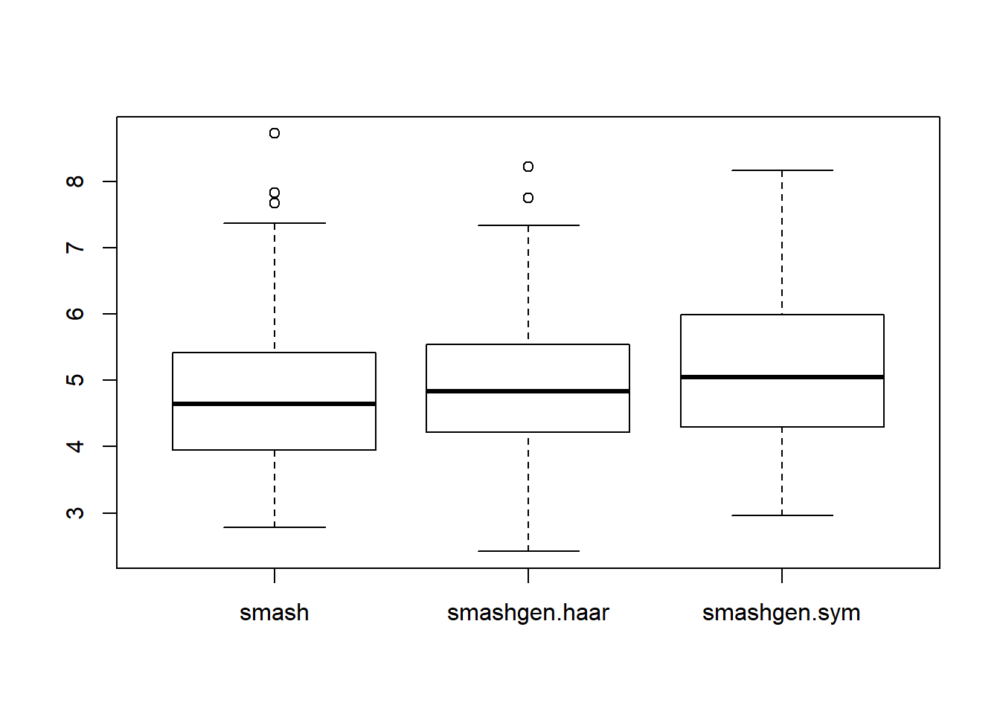
result=simu_study_basis(mu)
boxplot(result$err)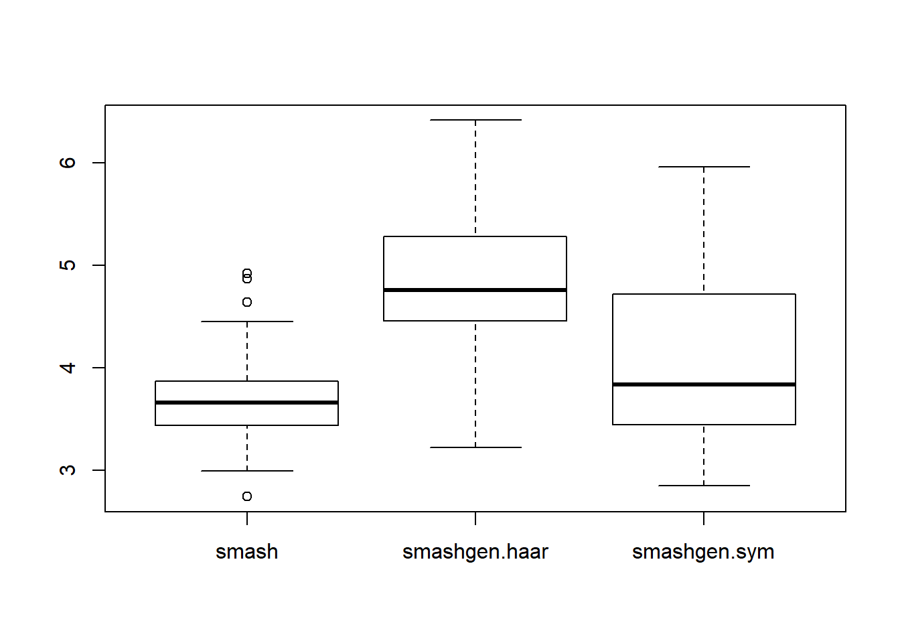
Parabola
r=function(x,c){return((x-c)^2*(x>c)*(x<=1))}
f=function(x){return(0.8 − 30*r(x,0.1) + 60*r(x, 0.2) − 30*r(x, 0.3) +
500*r(x, 0.35) − 1000*r(x, 0.37) + 1000*r(x, 0.41) − 500*r(x, 0.43) +
7.5*r(x, 0.5) − 15*r(x, 0.7) + 7.5*r(x, 0.9))}
mu=f(1:256/256)
mu=mu*100-20+0.1
plot(mu,type = 'l')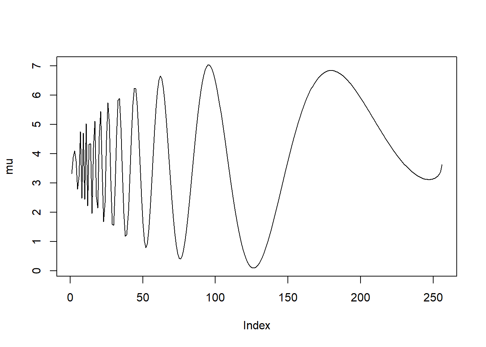
result=simu_study_basis(mu)
boxplot(result$err)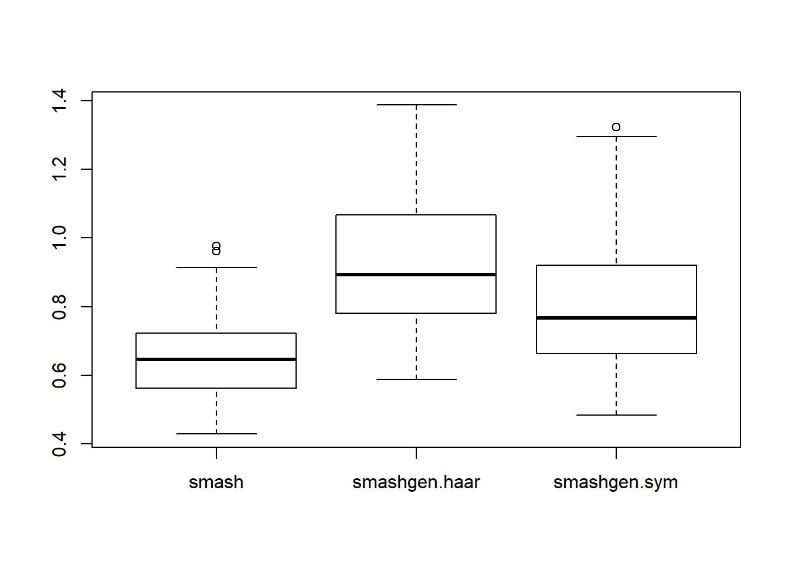
Step
mu=c(rep(2,64), rep(5, 64), rep(15, 64), rep(2, 64))
result=simu_study_basis(mu)
boxplot(result$err)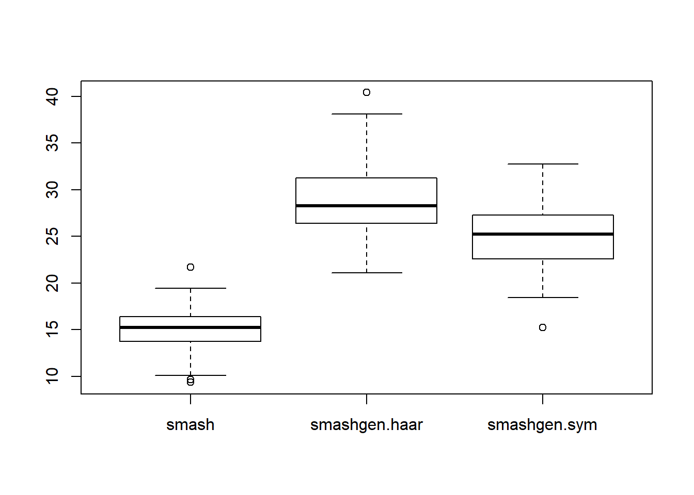
Wave
f=function(x){return(0.5 + 0.2*cos(4*pi*x) + 0.1*cos(24*pi*x))}
mu=f(1:256/256)
mu=mu*20-4
plot(mu,type='l')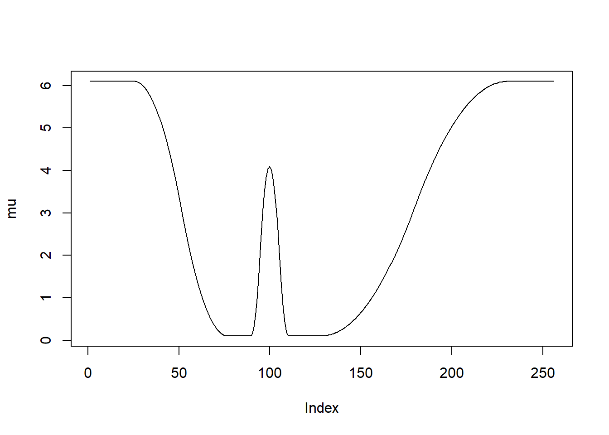
result=simu_study_basis(mu)
boxplot(result$err)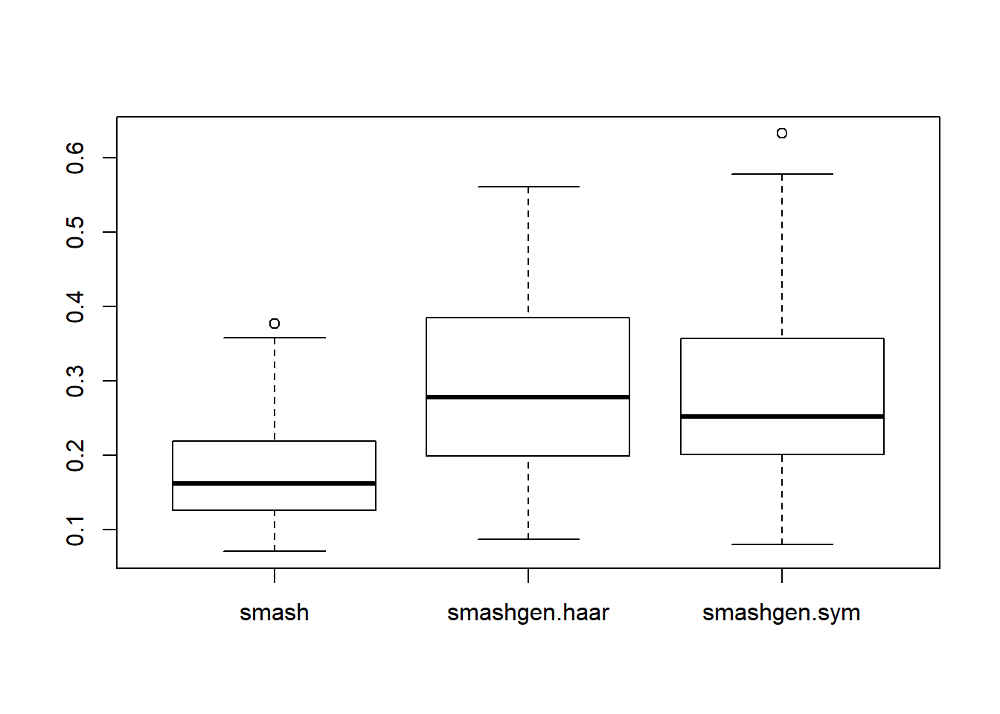
mu=f(1:256/256)
mu=mu*6-1.3
plot(mu,type='l')
result=simu_study_basis(mu)
boxplot(result$err)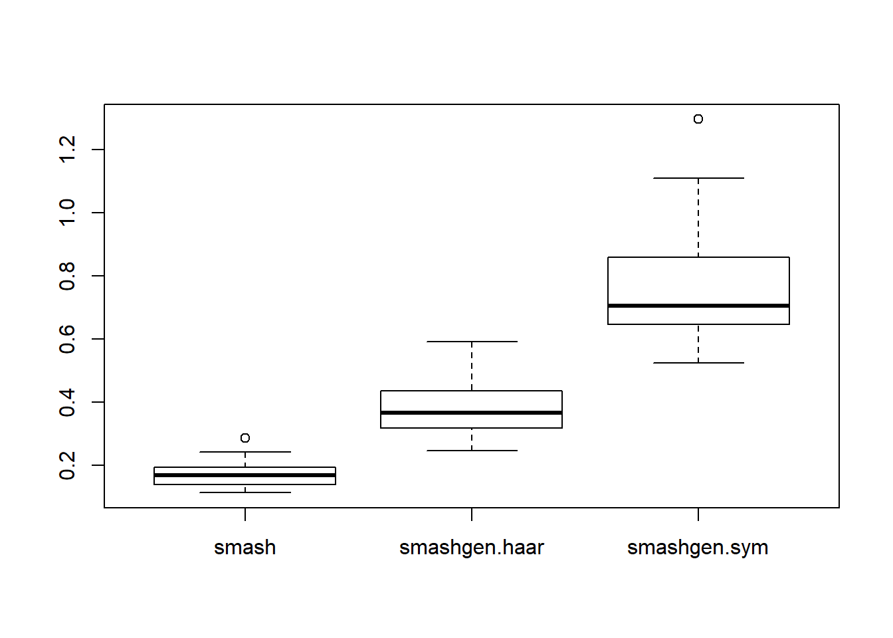
Time shifted sine
g=function(x){return((1 − cos(pi*x))/2)}
f=function(x){return(0.3*sin(3*pi*(g(g(g(g(x)))) + x) + 0.5))}
mu=f(1:256/256)
mu=mu*200+60.01
plot(mu)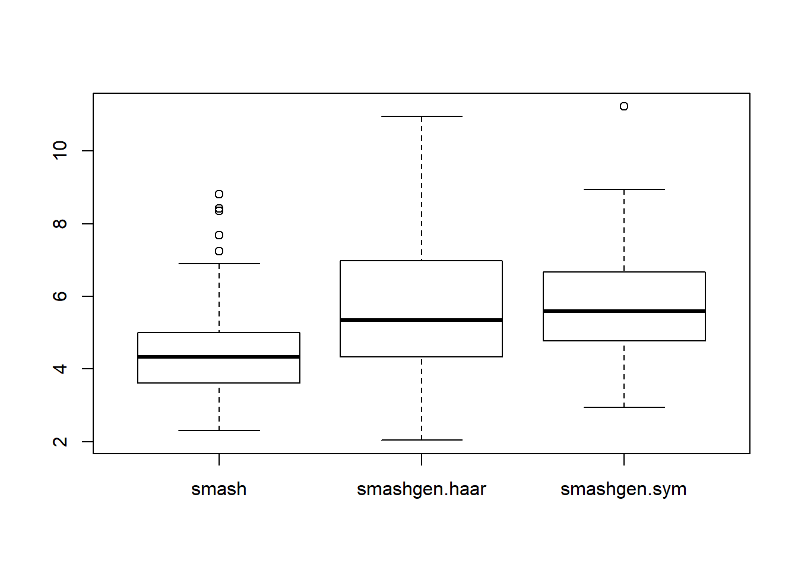
result=simu_study_basis(mu)
boxplot(result$err)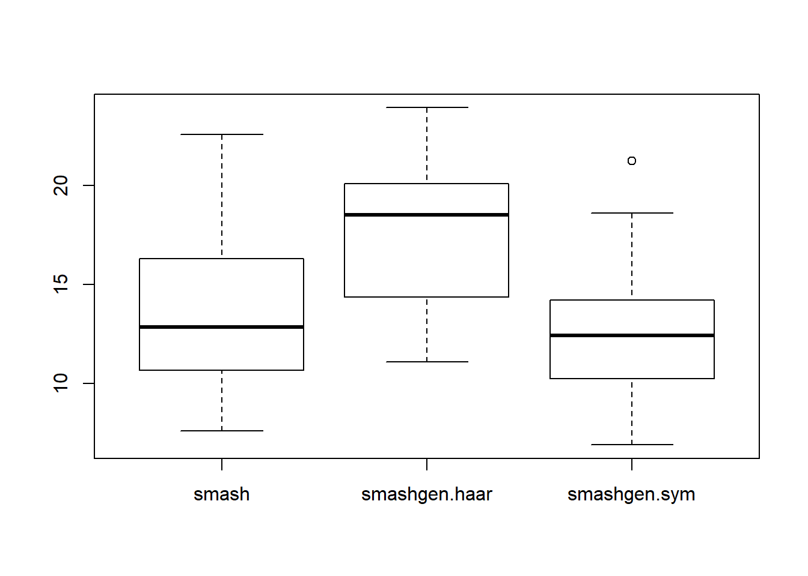
mu=f(1:256/256)
mu=mu*10+3.01
plot(mu,type='l')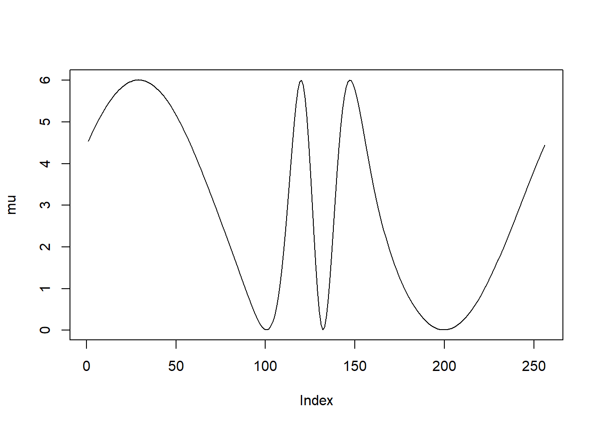
result=simu_study_basis(mu)
boxplot(result$err)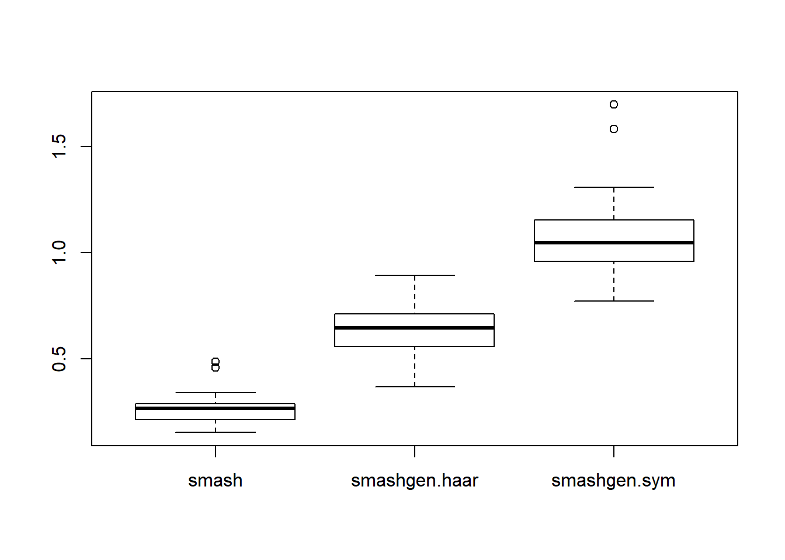
Session information
sessionInfo()R version 3.4.0 (2017-04-21)
Platform: x86_64-w64-mingw32/x64 (64-bit)
Running under: Windows 10 x64 (build 16299)
Matrix products: default
locale:
[1] LC_COLLATE=English_United States.1252
[2] LC_CTYPE=English_United States.1252
[3] LC_MONETARY=English_United States.1252
[4] LC_NUMERIC=C
[5] LC_TIME=English_United States.1252
attached base packages:
[1] stats graphics grDevices utils datasets methods base
other attached packages:
[1] smashrgen_0.1.0 wavethresh_4.6.8 MASS_7.3-47 caTools_1.17.1
[5] ashr_2.2-7 smashr_1.1-5
loaded via a namespace (and not attached):
[1] Rcpp_0.12.16 compiler_3.4.0 git2r_0.21.0
[4] workflowr_1.0.1 R.methodsS3_1.7.1 R.utils_2.6.0
[7] bitops_1.0-6 iterators_1.0.8 tools_3.4.0
[10] digest_0.6.13 evaluate_0.10 lattice_0.20-35
[13] Matrix_1.2-9 foreach_1.4.3 yaml_2.1.19
[16] parallel_3.4.0 stringr_1.3.0 knitr_1.20
[19] REBayes_1.3 rprojroot_1.3-2 grid_3.4.0
[22] data.table_1.10.4-3 rmarkdown_1.8 magrittr_1.5
[25] whisker_0.3-2 backports_1.0.5 codetools_0.2-15
[28] htmltools_0.3.5 assertthat_0.2.0 stringi_1.1.6
[31] Rmosek_8.0.69 doParallel_1.0.11 pscl_1.4.9
[34] truncnorm_1.0-7 SQUAREM_2017.10-1 R.oo_1.21.0 This reproducible R Markdown analysis was created with workflowr 1.0.1